Las pruebas realizadas utilizando poliacetileno dopado como electrodo en diferentes estados de oxidación o bien utilizando litio en uno de los electrodos , son muy prometedoras.
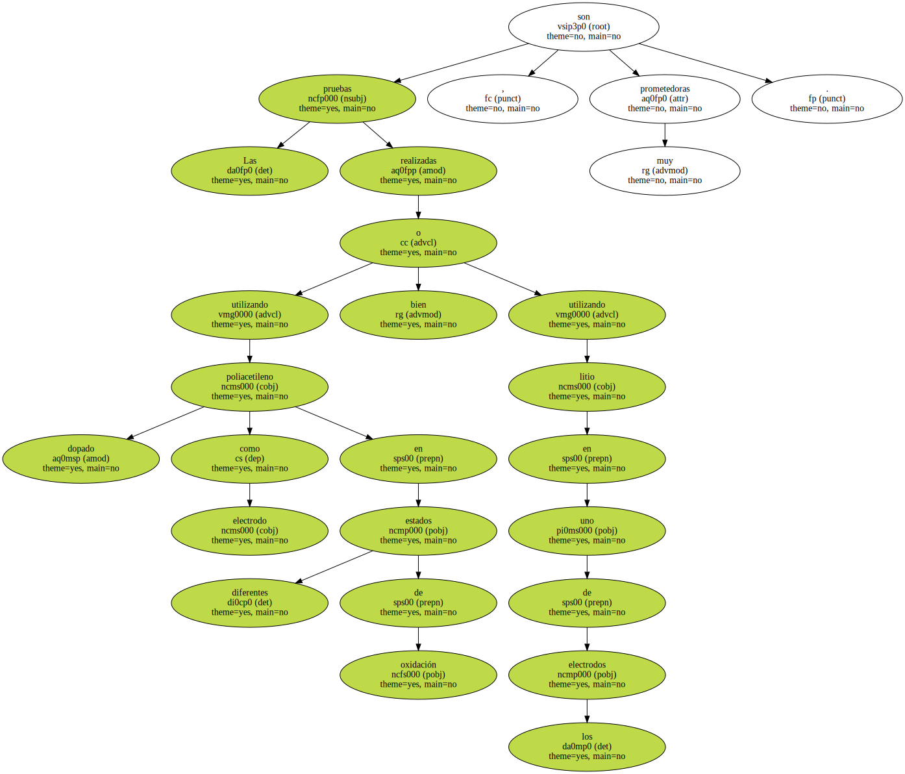De hecho , dos compañías , Bridgestone y Varta , en colaboración con ISF han patentado baterías con nodo de litio-aluminio y cátodo de polímero conductor , polianilina y polipirrol respectivamente.
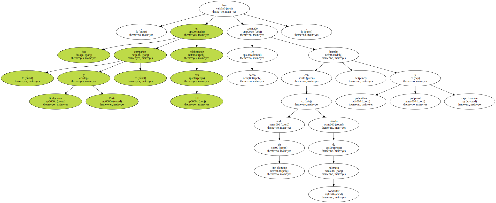Son muchas las otras posibles aplicaciones de los polímeros conductores tales como su uso como conductores eléctricos , antiestáticos , electrodos , sensores , etc.
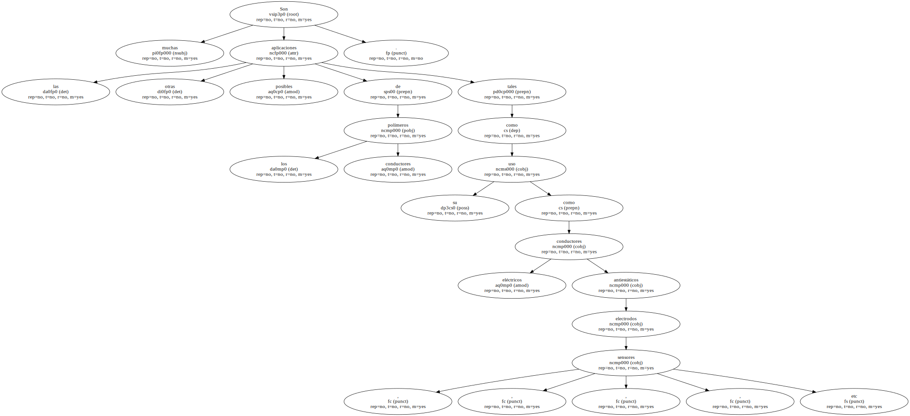Recientemente , Yoshino ha patentado un procedimiento para moldear piezas conductoras de poli-3-alquiltiofenos , lo que supone un notable avance , si bien estos tipos de polímeros son térmicamente sensibles , no porque se degraden , sino porque se pierde el - dopado - a temperaturas elevadas.
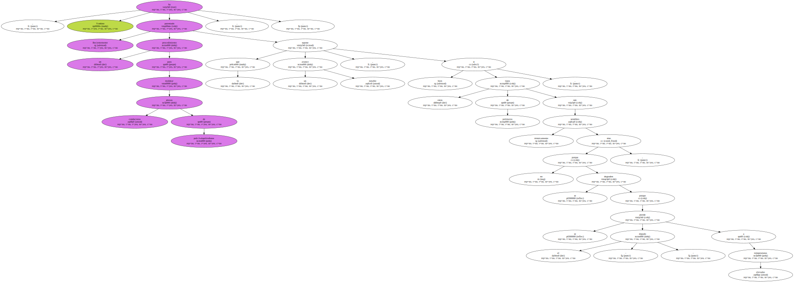El conocimiento de la estructura de estos materiales así como el fenómeno de la conductividad , es lo que conducirá a polímeros más estables y , por consiguiente , a su posible comercialización en las respectivas aplicaciones.
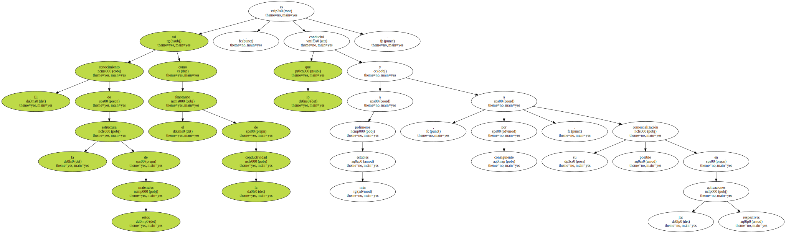El enorme esfuerzo que se está vertiendo en todo el mundo en el estudio de estos nuevos materiales , cuenta también en nuestro país con programas de investigación desarrollándose en varias Universidades y en el CSIC.
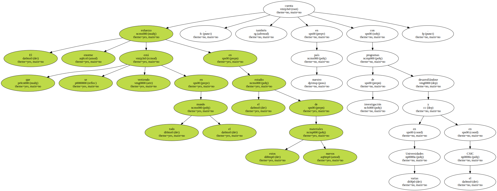Como se ha visto en el apartado anterior , los polímeros orgánicos dopados presentan serias dificultades a causa fundamentalmente de su baja estabilidad térmica y química , lo que por el momento limita sus aplicaciones prácticas.
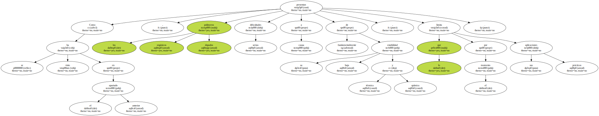Una clase de compuestos comparativamente más estables son los metalomacrociclos , es decir , complejos metálicos que contienen un sistema macrocíclico como ftalocianinas o tetrabenzoporfirinas , coordinado con un metal de transición capaz de dar hexacoordinación , como por ejemplo Fe , Co , Cr o Ru.
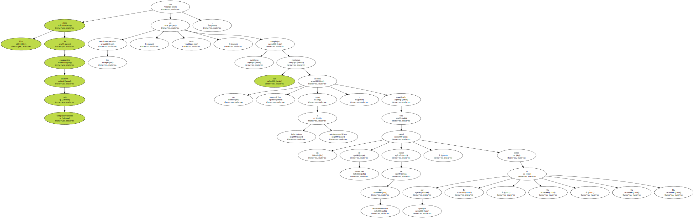Estos metalomacrociclos polimerizan formando un apilamiento entre las distintas moléculas , con la distancia interplanar adecuada ( fig. 2 ).

El solapamiento de los orbitales moleculares n permite , tras el proceso de dopado , una deslocalización de los electrones a lo largo del sistema macrocíclico dando lugar a materiales conductores quasiunidimensionales.
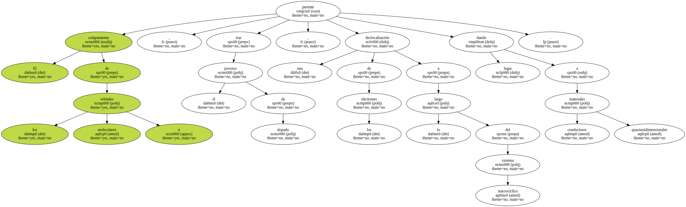En algunos casos también se ha podido observar conducción por contacto entre los tomos metálicos contenidos en los macrociclos.
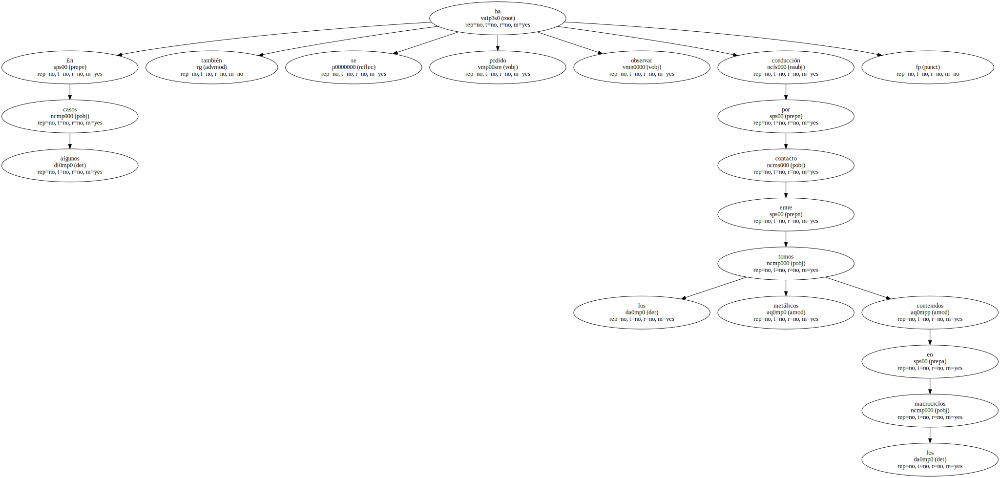Sin embargo , los complejos de metalomacrociclos no siempre cristalizan de este modo , y puede no darse el solapamiento de orbitales , perdiéndose así uno de los requerimientos necesarios para la conductividad.
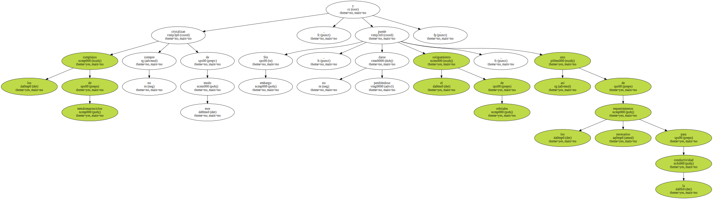